Brazo Robótico Esférico
Proyecto de Mecatrónica

Proyecto de Mecatrónica
Este proyecto aborda la concepción, modelado matemático y fabricación de un brazo robótico de articulación esférica (R-R-P), diseñado para ejecutar tareas de posicionamiento tridimensional con alta precisión.
Mediante la combinación de cinemática inversa calculada en tiempo real, actuadores paso a paso de alto torque y un algoritmo preventivo de protección anti-colisión, la plataforma transforma coordenadas cartesianas arbitrarias (X, Y, Z) en movimientos articulados fluidos y coordinados, respaldados por una interfaz física de control e indicadores visuales de estado.
Integrantes del proyecto de diseño, desarrollo cinemático e implementación mecatrónica:
Ingeniería y Desarrollo Mecatrónico
Ingeniería y Desarrollo Mecatrónico
Ingeniería y Desarrollo Mecatrónico
Ingeniería y Desarrollo Mecatrónico
Ingeniería y Desarrollo Mecatrónico
El sistema de potencia y control utiliza componentes mecatrónicos seleccionados para asegurar la resolución de pasos, la estabilidad térmica del sistema y la confiabilidad operativa.

Unidad central encargada de resolver la cinemática inversa, generar señales de pulso/dirección y gestionar la interfaz de usuario.

Actuadores de alto torque responsables del movimiento en las articulaciones rotacionales principales del brazo.

Controladores con regulación de corriente constante para un movimiento suave y protección de sobrecalentamiento.

Actuador de precisión para la articulación prismática responsable de la extensión y retracción del efector final.

Módulo de conmutación de señales para operar el motor unipolar 28BYJ-48 con indicación LED por fase.

Suministro eléctrico de alta estabilidad que evita caídas de tensión cuando ambos NEMA 17 operan a carga máxima.
Interrupción y ejecución manual: pulsadores dedicados para la secuencia de inicio, retorno seguro y conmutación de freno/habilitador.
Interfaz óptica de diagnóstico operacional instantáneo:
Parámetros clave del desempeño estructural, eléctrico y de procesamiento del manipulador:
Configuración Esférica 3 DOF (Rotacional - Rotacional - Prismática)
Cálculo trigonométrico e interpolación lineal a 16 MHz en Arduino Mega
Alimentación principal a 12V DC con capacidad de entrega de 10 Amperios
Protección automática en elevación θ2 y carrera máxima de extensión lineal e
Control por pulsos y dirección (PUL/DIR) con aceleración progresiva e inversión de sentido
Monitoreo mediante puerto serie, pulsadores físicos e indicadores LED de 3 estados
El flujo de trabajo inicia cuando el microcontrolador evalúa las coordenadas de destino (X, Y, Z). A través de las funciones trigonométricas en C++, determina los ángulos exactos θ1, θ2 y la extensión requerida e.
Antes de activar los motores, el algoritmo valida que las coordenadas no violen los límites de colisión físicos. Si la trayectoria es segura, el LED verde se enciende y los motores ejecutan la secuencia de movimiento paso a paso tanto en trayectoria directa como en rutina de regreso.
* Video de demostración temporal del entorno de pruebas. Próximamente se actualizará con la prueba del mecanismo final.
El brazo robótico fue modelado en CAD 3D (SolidWorks) y fabricado en filamento PET-G (densidad ~1.27 g/cm³, resistencia a la tracción de 25 a 35 MPa). A continuación se presentan las 12 piezas estructurales y ensambles de transmisión:
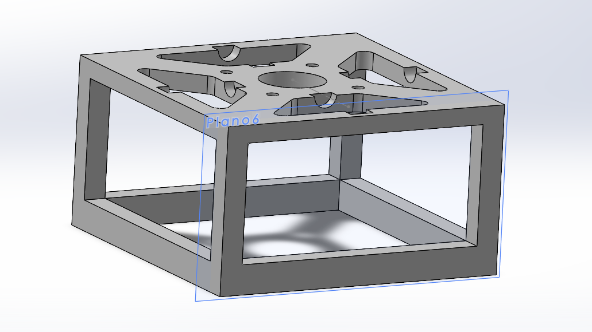
Ortoedro hueco con vaciados laterales para optimizar peso, montaje superior de motor a pasos y alojamientos para 4 portabaleros.
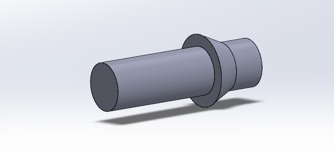
Pieza cilíndrica con pestaña central que actúa como tope axial para un correcto alineamiento al incrustarse en la base.
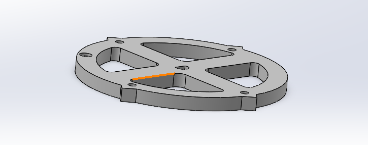
Disco estructural con 2 costillas de refuerzo ortogonales en cruz, acople ranurado para eje de motor y 4 anclajes perimetrales.
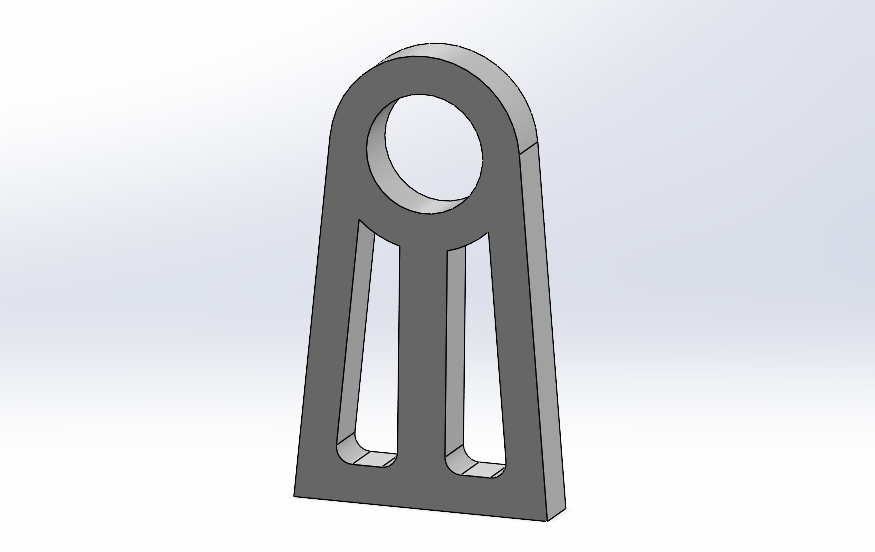
Estructura de soporte con disco interior de Ø22 mm para incrustar balero radial, reforzada con 2 barras tangentes y una central.
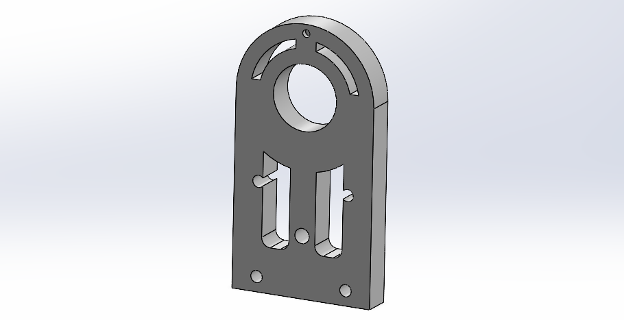
Soporte de perfil perpendicular diseñado para alojar un rodamiento radial de Ø22 mm y 4 cortes de sujeción directa de motor.
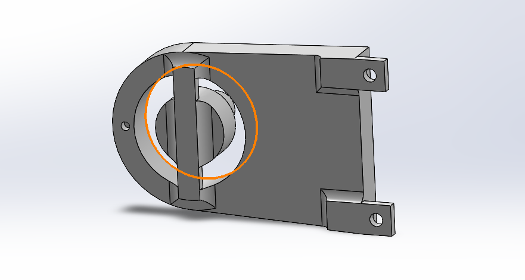
Eslabón conector con eje acoplado al disco interior para ensamble en balero y 2 pestañas de sujeción para la articulación extensible.
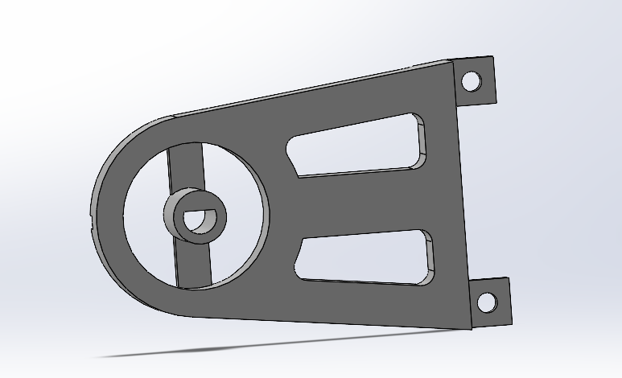
Pieza conector con eje cilíndrico para balero y chavetero ranurado coincidente con el eje del motor para transmisión de par sin deslizamiento.
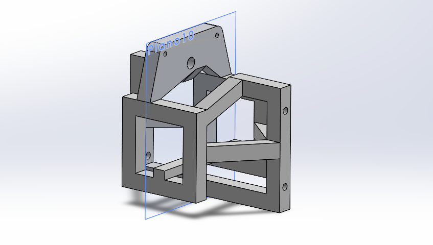
Módulo de guiado formado por 3 estructuras tipo ortoedro (exteriores: 39x39x7 mm, interior: 79x54x7 mm) unidas por travesaños.
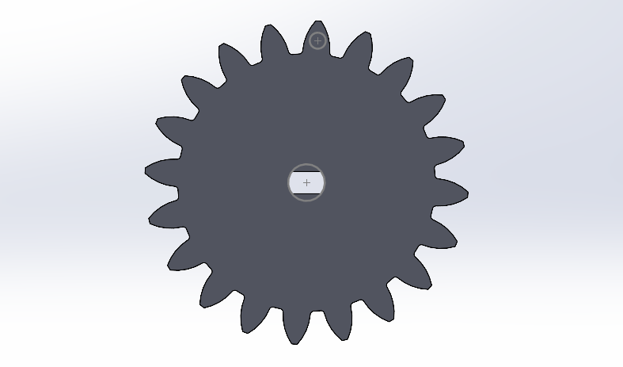
Engranaje de precisión para acoplamiento mecánico directo sobre la cremallera del 3er GDL (extensión prismática e).
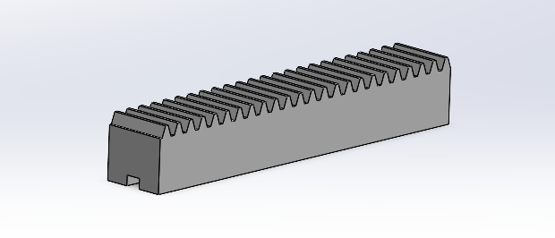
Barra dentada de precisión diseñada para un recorrido lineal suave y guiado dentro de la estructura de extensión.
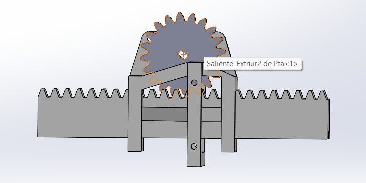
Articulación prismática completa encargada de extender y retraer el brazo con una constante de avance de 12.6 cm/vuelta.
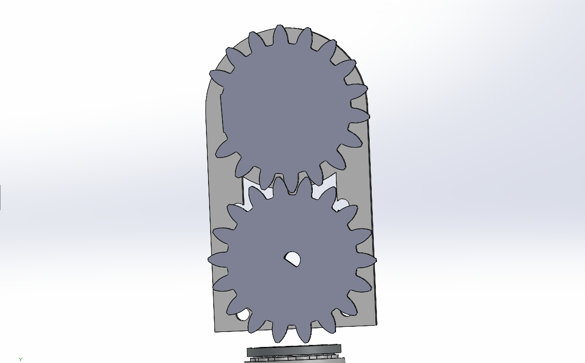
Par de engranes directos que permiten distanciar físicamente el motor del eje principal de articulación manteniendo velocidad y torque.
El firmware en C++ calcula la cinemática inversa a partir de las coordenadas cartesianas de entrada (X, Y, Z) para determinar los ángulos articulados (th1, th2) y la extensión de la cremallera (e). Incluye algoritmos de protección anti-colisión en tiempo real, rutinas de secuencia de inicio/regreso seguro e interrupción manual de freno.
float x = 100;
float y = 100;
float z = 100;
float th1 = 0;
float th1n = 0;
float th2 = 0;
float th2n = 0;
float h = 0;
float e = 0;
float a = 0;
const int enaPin = 34;
const int dirPin = 36;
const int pulPin = 38;
const int enaPin2 = 35;
const int dirPin2 = 37;
const int pulPin2 = 39;
int ppv = 2048;
float con = 0;
float cona = 0;
int pasos = 0;
int pinan = 0;
int paro = 10;
int pausa = 9;
int giro = 8;
int ini = 12;
int inia;
int inic;
int fre = 13;
int fren;
int frea;
int cuen;
int reg = 11;
int regr;
int rega;
int seguro;
void setup() {
Serial.begin(9600);
pinMode(enaPin, OUTPUT);
pinMode(dirPin, OUTPUT);
pinMode(pulPin, OUTPUT);
pinMode(enaPin2, OUTPUT);
pinMode(dirPin2, OUTPUT);
pinMode(pulPin2, OUTPUT);
pinMode(2, OUTPUT);
pinMode(3, OUTPUT);
pinMode(4, OUTPUT);
pinMode(5, OUTPUT);
pinMode(paro, OUTPUT);
pinMode(giro, OUTPUT);
pinMode(inic, INPUT);
pinMode(fre, INPUT);
pinMode(reg, INPUT);
digitalWrite(enaPin, HIGH);
digitalWrite(enaPin2, HIGH);
digitalWrite(paro, LOW);
a = y - 81.5;
th1 = atan2(x,(z*-1))* (180 / PI);
h = sqrt(x*x + z*z);
th2 = atan2(a,h) * (180 / PI);
e = ((sqrt(a*a + h*h)) - 50);
con = (e - 78) / 10;
seguro = 0;
}
void loop() {
inic = digitalRead(ini);
fren = digitalRead(fre);
regr = digitalRead(reg);
Serial.println(seguro);
if (fren == HIGH && frea == LOW){
cuen = !cuen;
digitalWrite(enaPin, cuen);
digitalWrite(enaPin2, cuen);
}
if (th2 > 45 && e < 113){
Serial.println("Motor bloqueado por riesgo de colision");
digitalWrite(paro, HIGH);
}
else if (th2 < (-19) || e < 55 || e > 220){
Serial.println("Motor bloqueado por riesgo de colision");
digitalWrite(paro, HIGH);
}
else {
Serial.println("No hay colisiones, listo para usar");
if (inic == HIGH && inia == LOW){
inicio();
}
if (regr == HIGH && rega == LOW && seguro == 1){
regreso();
}
}
stop();
delay(50);
inia = inic;
frea = fren;
rega = regr;
}
void run(){
digitalWrite(pausa, LOW);
digitalWrite(giro, HIGH);
}
void stop(){
digitalWrite(giro, LOW);
digitalWrite(pausa, HIGH);
}
void inicio(){
if(con < 0){
run();
cona = con * (-1);
pasos = (ppv * cona) / 12.6;
horario();
}
if(con > 0){
run();
pasos = (ppv * con) / 12.6;
antihorario();
}
delay(500);
if (th1 < 0){
run();
digitalWrite(dirPin, LOW);
th1n = th1 * (-1);
gira1(th1n);
}
if (th1 > 0){
run();
digitalWrite(dirPin, HIGH);
gira1(th1);
}
delay(500);
if (th2 < 0) {
run();
digitalWrite(dirPin2, LOW);
th2n = th2 * (-1);
gira2(th2n);
}
if (th2 > 0) {
run();
digitalWrite(dirPin2, HIGH);
gira2(th2);
}
delay(500);
seguro = 1;
}
void regreso(){
if(con < 0){
run();
cona = con * (-1);
pasos = (ppv * cona) / 12.6;
antihorario();
}
if(con > 0){
run();
pasos = (ppv * con) / 12.6;
horario();
}
delay(500);
if (th1 < 0){
run();
digitalWrite(dirPin, HIGH);
th1n = th1 * (-1);
gira1(th1n);
}
if (th1 > 0){
run();
digitalWrite(dirPin, LOW);
gira1(th1);
}
delay(500);
if (th2 < 0) {
run();
digitalWrite(dirPin2, HIGH);
th2n = th2 * (-1);
gira2(th2n);
}
if (th2 > 0) {
run();
digitalWrite(dirPin2, LOW);
gira2(th2);
}
delay(500);
seguro = 0;
}
void gira1(long pul1) {
long totalPasos1 = (pul1 / 360.0) * 1600.0;
for (long paso1 = 0; paso1 < totalPasos1; paso1++) {
int velocidad1 = 800;
if (paso1 < 10) {
velocidad1 = map(paso1, 0, 10, 3000, 800);
}
digitalWrite(pulPin, HIGH);
delayMicroseconds(velocidad1);
digitalWrite(pulPin, LOW);
delayMicroseconds(velocidad1);
}
}
void gira2(long pul2) {
long totalPasos2 = (pul2 / 360.0) * 1600.0;
for (long paso2 = 0; paso2 < totalPasos2; paso2++) {
int velocidad2 = 800;
if (paso2 < 10) {
velocidad2 = map(paso2, 0, 10, 3000, 800);
}
digitalWrite(pulPin2, HIGH);
delayMicroseconds(velocidad2);
digitalWrite(pulPin2, LOW);
delayMicroseconds(velocidad2);
}
}
void horario (){
for (int i = 0; i < pasos; i++){
int pin = i % 4 + 2;
digitalWrite(pin, HIGH);
digitalWrite(pinan, LOW);
delayMicroseconds(1760);
Serial.println(pin);
Serial.println(pinan);
pinan = pin;
}
}
void antihorario (){
for (int i = 0; i < pasos; i++){
int pin = (i % 4 - 5) * (-1);
digitalWrite(pin, HIGH);
digitalWrite(pinan, LOW);
delayMicroseconds(1760);
Serial.println(pin);
Serial.println(pinan);
pinan = pin;
}
}